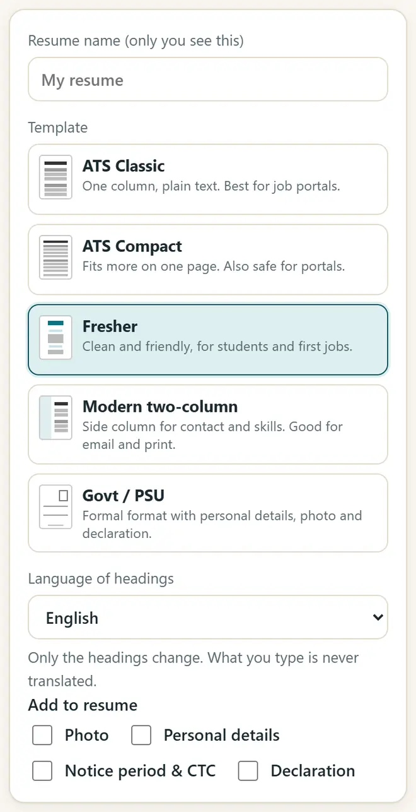

ફ્રેશર માટે રિઝ્યુમ ફોર્મેટ: એક પાનાનો રિઝ્યુમ મફતમાં બનાવો
ઘણી રિઝ્યુમ વેબસાઇટ પહેલાં બધું ભરાવે છે અને પછી ડાઉનલોડ પહેલાં પૈસા કે લોગિન માગે છે. અહીં તમે એક પાનાનો ચોખ્ખો રિઝ્યુમ બનાવીને PDF મફતમાં સેવ કરી શકો, અને તમારો ફોન નંબર તથા સરનામું તમારા પોતાના ડિવાઇસ પર જ રહે છે.
ટૂંકો જવાબ
રિઝ્યુમ અને CV બનાવો ખોલો, “ખાલીથી શરૂ કરો” દબાવો અને “ફ્રેશર” ટેમ્પ્લેટ પસંદ કરો (જોબ પોર્ટલ માટે “ATS ક્લાસિક”). તમારું નામ અને સંપર્ક, 2 કે 3 લીટીનો સાર, ભણતર, પ્રોજેક્ટ કે ઇન્ટર્નશિપ અને સ્કિલ ભરો. તેને એક પાનામાં રાખો, પછી “PDF સેવ / પ્રિન્ટ” દબાવો અને Save as PDF પસંદ કરો.
5 પગલાંમાં ફ્રેશર રિઝ્યુમ
-
એપ ખોલો અને ખાલીથી શરૂ કરો
રિઝ્યુમ અને CV બનાવો ખોલો. તે એક નમૂનાના રિઝ્યુમ સાથે ખૂલે છે, જેથી તમે ફોર્મેટ જોઈ શકો. તેને કાઢીને તમારી વિગતો ભરવા “ખાલીથી શરૂ કરો” દબાવો.
-
ટેમ્પ્લેટ પસંદ કરો
“ફ્રેશર” ચોખ્ખું અને સરળ છે, વિદ્યાર્થીઓ અને પહેલી નોકરી માટે. જોબ પોર્ટલ અને કંપનીઓની કરિયર સાઇટ માટે “ATS ક્લાસિક” અથવા “ATS કૉમ્પેક્ટ” લો: સાદું લખાણ, જે ભરતીનું સોફ્ટવેર વાંચી શકે છે. “સરકારી / PSU” ઔપચારિક ફોર્મેટ છે, જેમાં અંગત વિગતો અને ઘોષણા હોય છે.

ટેમ્પ્લેટ પસંદ કરો: ફ્રેશર, ATS, મોડર્ન કે સરકારી / PSU. -
તમારી વિગતો ભરો
તમારું નામ, મોબાઇલ નંબર, ઇમેલ અને શહેર લખો. 2 કે 3 લીટીનો સાર લખો: તમે કોણ છો, તમારી સૌથી મજબૂત સ્કિલ કઈ છે અને તમારે કઈ નોકરી જોઈએ છે. પછી ગુણ સાથે ભણતર, પ્રોજેક્ટ, ઇન્ટર્નશિપ, સ્કિલ અને સિદ્ધિઓ ઉમેરો.
-
દમદાર મુદ્દા લખો
દરેક મુદ્દો કોઈ ક્રિયાપદથી (action verb) શરૂ કરો અને સાચું હોય તો આંકડો ઉમેરો: કેટલા, કેટલું કે કેટલા ટકા. એપ આવાં ક્રિયાપદ સૂચવે છે, અને “AI પ્રોમ્પ્ટ કૉપિ કરો” એક પ્રોમ્પ્ટ આપે છે, જેને કોઈ પણ AI ચેટબોટમાં પેસ્ટ કરીને તમે મુદ્દા સુધારી શકો. જે કર્યું નથી તે ક્યારેય ન લખો.
-
પાનું તપાસો અને PDF સેવ કરો
“પ્રિવ્યૂ” ખોલો અને પેજ-ફિટ મીટર જુઓ: ફ્રેશરનો રિઝ્યુમ એક A4 પાનામાં આવી જવો જોઈએ. “PDF સેવ / પ્રિન્ટ” દબાવો, પ્રિન્ટ વિન્ડોમાં Save as PDF પસંદ કરો, Margins Default રાખો અને Background graphics ચાલુ કરો.

રિઝ્યુમનો લાઇવ A4 પ્રિવ્યૂ.
ફ્રેશરના રિઝ્યુમમાં શું લખવું
- એક સારો ક્રમ: નામ અને સંપર્ક, સાર, ભણતર, પ્રોજેક્ટ કે ઇન્ટર્નશિપ, સ્કિલ, સિદ્ધિઓ. એપમાં વિભાગો ઉપર-નીચે કરી શકાય છે.
- કામનો અનુભવ નથી? પ્રોજેક્ટ, ઇન્ટર્નશિપ, કોલેજના કાર્યક્રમ, NSS કે NCC, રમતગમત અને સર્ટિફિકેટથી બતાવો કે તમે શું કરી શકો છો.
- સાદું ઇમેલ સરનામું અને તમે ઉપાડો છો તે જ મોબાઇલ નંબર આપો. ફોટો, જન્મતારીખ કે ઘોષણા નોકરીમાં માગી હોય તો જ ઉમેરો.
- જોડણી બે વાર તપાસો અને કોઈને વાંચવા આપો. દરેક પ્રકારની નોકરી માટે અલગ રિઝ્યુમ બનાવો: એપ તેને “મારા રિઝ્યુમ” માં રાખે છે.
નવાં મફત ટૂલ અને હિન્દીમાં AIના પાઠ મેળવો
અમારી ઇમેઇલ યાદીમાં જોડાઓ: નવી મફત ઍપ્સ, નવી માર્ગદર્શિકાઓ અને AI પર હિન્દી વીડિયો પાઠની માહિતી તમને મળતી રહેશે. કોઈ સ્પૅમ નહીં.
ફક્ત પુખ્ત વયના લોકો (18+) માટે. તમે ગમે ત્યારે નામ કઢાવી શકો છો.
અમે આ ટૂલ કેમ સૂચવીએ છીએ
- બધા માટે મફત: જાહેરાત નહીં, સાઇન-અપ નહીં, પેઇડ પ્લાન નહીં.
- ખાનગી: તમારી ફાઇલો અને માહિતી તમારા પોતાના ડિવાઇસ પર જ રહે છે.
- ફોન, લૅપટૉપ કે સ્માર્ટબોર્ડ પર ચાલે છે, અને એક વાર ખૂલ્યા પછી ઇન્ટરનેટ વગર પણ.
- ગુજરાતી અને હિન્દી સહિત 12 ભાષાઓમાં.
વીડિયોથી શીખવું ગમે છે? અમારી YouTube ચૅનલ પર AI અને મફત ટૂલના હિન્દી પાઠ જુઓ.
વારંવાર પૂછાતા પ્રશ્નો
ફ્રેશર માટે કયું રિઝ્યુમ ફોર્મેટ સૌથી સારું છે?
એક પાનાનો રિઝ્યુમ, જેમાં ભણતર ઉપરની બાજુ હોય, પછી પ્રોજેક્ટ કે ઇન્ટર્નશિપ અને સ્કિલ. ઇમેલ અને પ્રિન્ટ માટે “ફ્રેશર” ટેમ્પ્લેટ લો, અને જોબ પોર્ટલ પર અપલોડ કરતી વખતે “ATS ક્લાસિક”.
શું આ ખરેખર મફત છે? સાઇન-અપ કરવું પડે?
હા, મફત છે. સાઇન-અપ નહીં, વોટરમાર્ક નહીં અને PDF માટે પણ કોઈ પૈસા નહીં.
મારી વિગતો ક્યાં સેવ થાય છે?
ફક્ત આ બ્રાઉઝરમાં, તમારા પોતાના ડિવાઇસ પર. કોઈ સર્વર પર કંઈ મોકલાતું નથી. બેકઅપ રાખવા કે બીજા ડિવાઇસ પર કામ ચાલુ રાખવા “JSON એક્સપોર્ટ” વાપરો.
ATS રિઝ્યુમ શું છે?
ઘણી કંપનીઓ રિઝ્યુમ પહેલાં એક સોફ્ટવેર (Applicant Tracking System) પાસે વંચાવે છે. તે એક કોલમનું સાદું લખાણ સૌથી સારું વાંચે છે, એટલે ATS ટેમ્પ્લેટમાં ફોટો, કોલમ અને ગ્રાફિક્સ હોતાં નથી.
શું ફોન પર રિઝ્યુમ બનાવી શકાય?
હા. ફોર્મ ભરો, A4 પાનું જોવા “પ્રિવ્યૂ” પર જાઓ અને બ્રાઉઝરની પ્રિન્ટ વિન્ડોમાંથી PDF સેવ કરો.
ઉપયોગી લાગી?
કોઈ મિત્ર, સહકર્મીઓ કે તમારી શાળાના WhatsApp ગ્રુપમાં મોકલો.